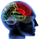

Randi Most, Ph.D., ABN

Board Certified Neuropsychologist
Dr. Most is a Diplomate of the American Board of Professional Neuropsychology and is located in Jacksonville, Florida.
She received her doctorate in clinical psychology from Emory University then completed her internship in neuropsychology at the University of Florida in Gainesville. She currently provides neuropsychological assessments from her office in Jacksonville, Florida.
Dr. Most specializes in the assessment of brain dysfunction in patients of all ages for the purpose of differential diagnosis, treatment planning and placement. Her private practice encompasses patients with a broad range of neurological and psychiatric disorders. These include strokes, traumatic brain injuries, seizure disorders, neurological disorders (such as multiple sclerosis, dementias and birth defects), tumors, endocrine disorders (such as lupus and diabetes), attention deficit disorder, learning disabilities, depression and anxiety disorders. She offers consultations, education and support to adult patients and their families.